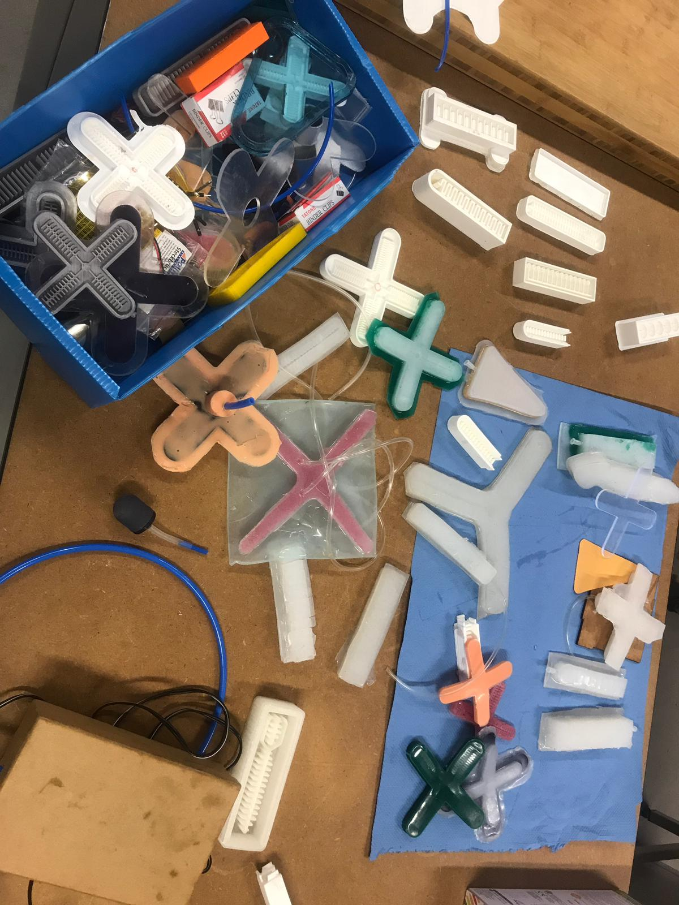
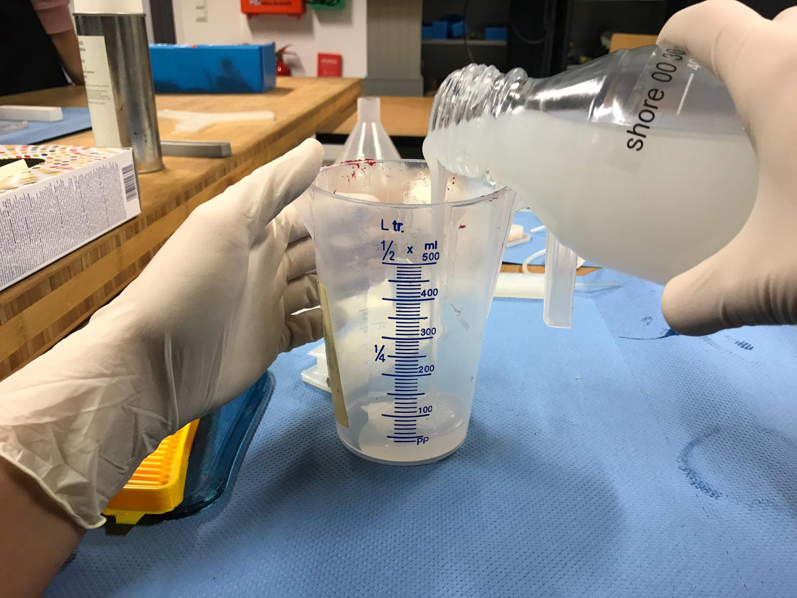
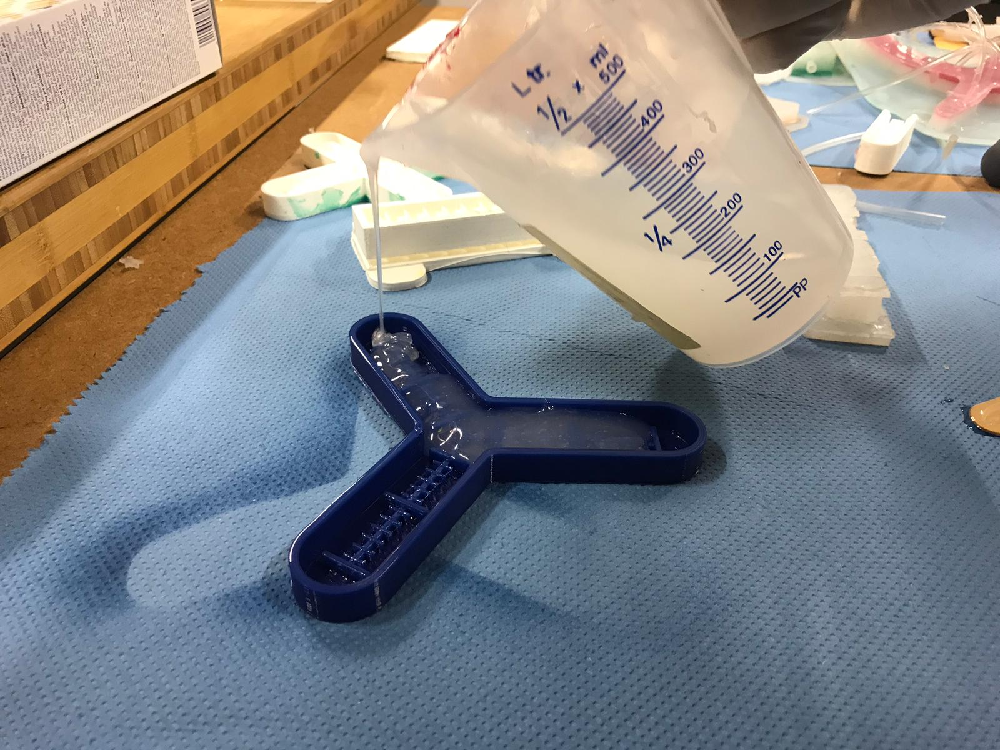
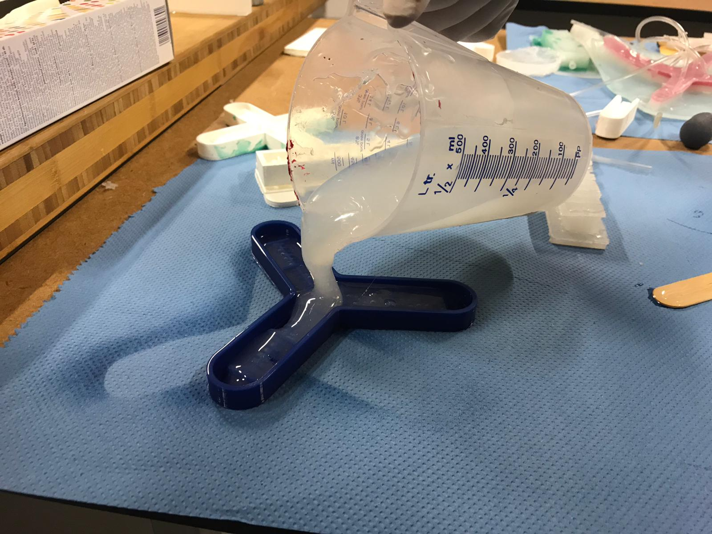
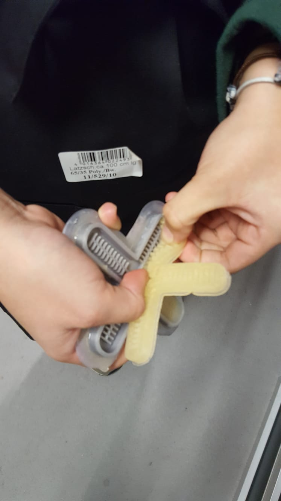
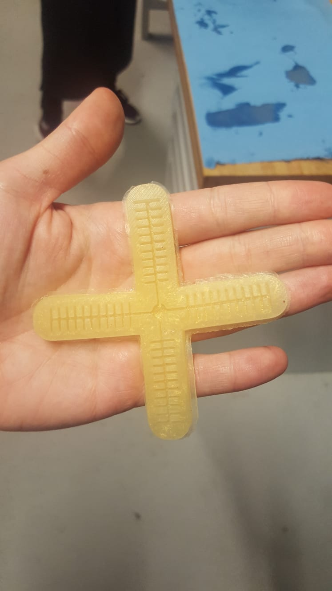
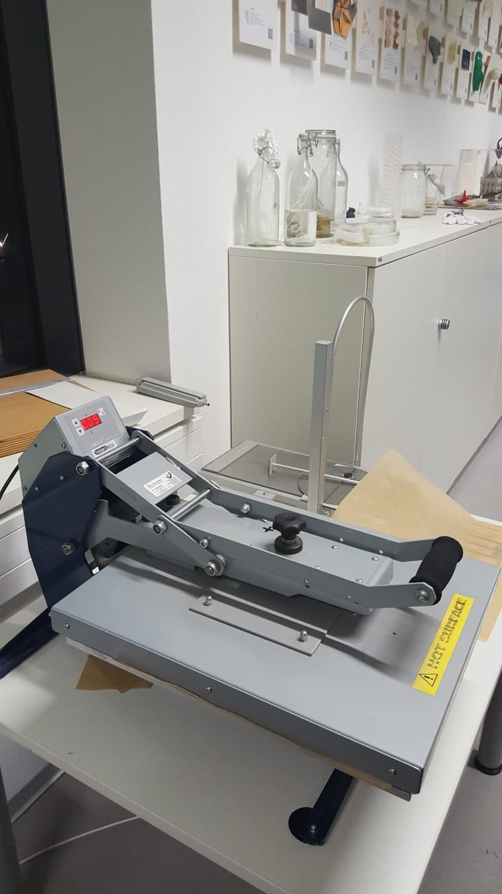
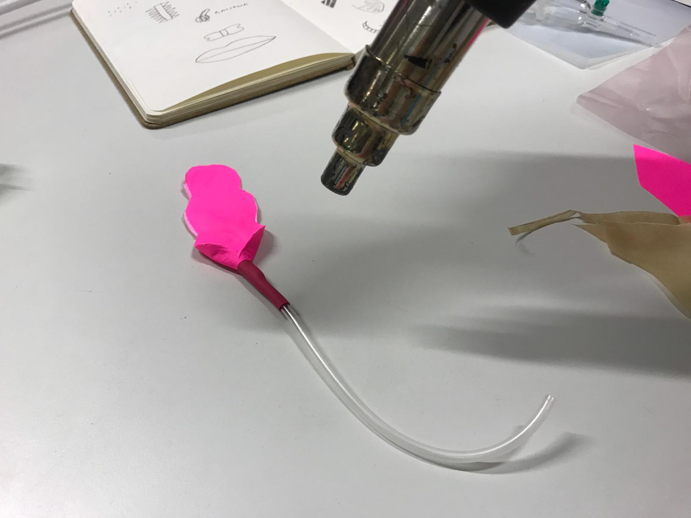
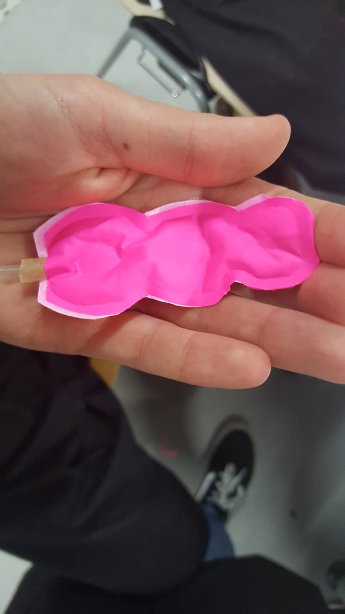

SOFT ROBOTICS
Soft robotics is a subfield of robotics which deal with constructing robots from highly compliant materials. These material are similar to those found in living organisms due to they mimic the smoothness and smartness that can be found in them.
Before starting, it is remarkable that during this lecture, we count with the help of a fashion designer from Amsterdam, who told us about his works which were specializes on soft robotics and the Auckland's FabLab's Director from New Zealand.
It should be pointed out that there are different kind of soft robots.
First, we developed inflatables soft robotics.
To be able to manage with it, the required
materials were:
- A 3D printed casting with separation for air chambers.
- The sillicon rubber Neukasil. There were to types, RTV 30, A or B, and RTV50B. Depending of what of these RTV30 were used, the elasticity of the soft robotic would be different, in such a way that using the 30B, the elasticity wouold be higher. Then the RTV30B and the RTV50B were mixed by using sticks.
After mixing these components, colour dyes could be added and mixed.
It is very important to use a sillicon spry for sprying the model before the mixture is spread through the mold.
To finish, it was required to put the cast with the mixture in the overn for fifteen minutes. Then, a plastic straw can be insert in the target soft robotic to mimic the movements of any living organism.
Here, it can be seen the process of the develop of my inflatables soft robotic and the final result:
 
 
 
Moreover, we worked with another type of soft robotics,the ones which work with air.
Firstly for developing our own soft robotic, we drew twice (symmetrically) our design. For doing this, a software can be used, however in my case I did not use it. It is noteworthy that the draw should be done in backing paper.
Then, it is necessary to cut bigger bodies to cover the baking paper's design. Once this has be done, all together should be pressed into a specific machine until it reached 120ºC.

The next step is to cut the design leaving some margin and to introduce a straw, so that by inserting the straw through a certain point, the body can be inflated when air is introduced through it.
To allow the straw to remain permanently, a tight seal was made using a particularly powerful dryer.

Bellow, an image of the result is shown:
